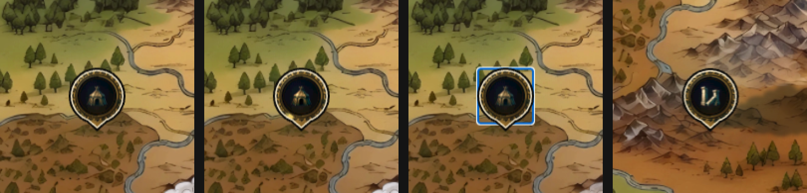
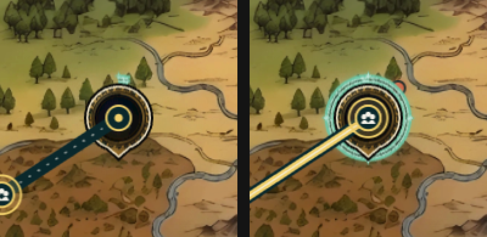
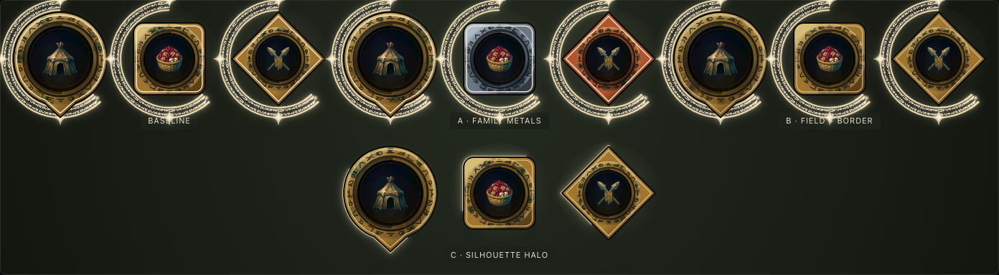

Fork v35 dopo il ruling POI-T = B «la sagoma dice il rischio». La sagoma porta già la famiglia (PLAN-058) e la B4-map C propone di metterci anche il tempo: tre modi di farci stare il rischio senza perdere il resto. Nessuna opzione è consigliata.
Condizioni: marker a 55 px (taglia M) su ritagli reali della mappa a 2× (cattura `/game` 1440×900, skin base); stati forzati a mano nel mockup, non dal gioco. Palette, campo e comparsa = baseline (sono la fork B4-map, non questa). Brief: POI_brief_sigillo.md.



| Asse | A · Corona | B · Orlo dentato | C · Sagoma-orologio + corona |
|---|---|---|---|
| Rischio leggibile da lontano, anche in grigio | sì: si contano le corna | «bassa/media» sì, «media/alta» deboli a 55 px | sì: come A |
| Aderenza al mockup scelto in POI-T | piena (corna + brace) | stessa idea, altro gesto | piena sul rischio |
| Ingombro e collisione con l'alone alle ore 12 | le corna entrano nell'alone tra le 10 e le 2; marker ~+20% in altezza | nessuna: stesso ingombro di oggi | nessun alone esterno; le corna incrociano il tempo sul bordo |
| Tanti POI vicini | più alti, si toccano prima | i più compatti con alone | i più compatti in assoluto |
| Desiderata v3 FROZEN (cerchio magico attorno) | rispettata | rispettata | da rivedere (e D7 «lettere invariate») |
| Bordo doppio (cancello dei biomi) | intatto | segue i denti: va ri-misurato | intatto |
| Costo DOM | +~10 nodi | +0 (cambia un path) | −~1 200 nodi (via le due bande di lettere) |
| Costo implementativo | medio | basso-medio | alto: desiderata + kit `MagicCircleHalo` divergente |
| Reduced-motion / a11y | uguale per le tre: nessun moto legato al rischio; etichetta «rischio {fascia}»; emblemi fissi | ||
deriveOfferBand) calcolata alla comparsa e messa in MapQuestPoiSessionShape → mapQuestPoiView → prop risk di PoiMatericV3_5 (T-07). Oggi si calcola solo aprendo il planner.reward/survived/fled/wipe) e pieno-in-attesa fino al marker; vinto ≠ perso; emblemi-oggetto al posto del pallino rosso (MapQuestPoi.tsx:230-250).QuestJourneyRoute finisce sul bordo/coda; gettone del party accanto (questJourneyRouteConfig.ts).gameFrame.questPoi.*); interno role="img" «Resident medal» → aria-hidden; focus nella materia (token nuovo --skin-poi-focus); roving tabindex per lo strato POI, dopo la HUD.MapQuestPoi.tsx:165-169, 221-224); oggi scala ancora.useId o defs condivisi (V35:634-663); fermare il rAF animRim a riposo (V35:491-509); seme al posto di Math.random (V35:218-240).PixiWorldMap.tsx:1934-1949).poi-terrain-gate.py esteso alle 4 fasce di rischio in grigio a 55 px.poiSigillo.ts, strato nuovo nel ramo sigillo di V35, su quest e rombo.--skin-poi-risk-ember per placca e corna.haloFollowsSilhouette dalla lab (V35:853-881): oggi usa cappucci tondi su un arco che può valere 0 (trappola T-02).MagicCircleHalo/questPoiKit o dichiarare la divergenza (Medaglione F-06).Limiti del mockup: le lettere dell'alone sono un tratteggio, non i glifi veri (100 per banda, D7); gli emblemi (occhio, scintilla, lame, lucchetto) sono schizzi; il gettone del party è quello di PLAN-053 ridisegnato a mano. Gli stati sono forzati: in scadenza e main oggi non compaiono su /game.